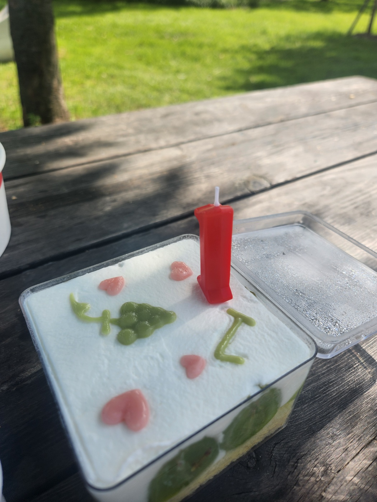

고소한 생크림과 부드러운 시트가 만나면서 달콤한 과일이 어우러지는 케이크
| 재료 | 계량 | |
|---|---|---|
| —바닐라 시트 | ||
| 달걀 | 160 g | |
| 노른자 | 30 g | |
| 설탕 | 100 g | |
| 꿀 | 7 g | |
| 박력분 | 88 g | |
| 아몬드 분말 | 7 g | |
| 우유 | 25 g | |
| 버터 | 25 g | |
| 식용유 | 7 g | |
| 럼 | 1.5 g | |
| — 생크림 | ||
| 생크림 | 250 g | |
| 설탕 | 36 g | |
| 럼 | 1 Tbsp | |
오븐을 160°C로 예열하고 우유를 데워줍니다.
박력분, 아몬드가루를 함께 체에 두 번 내려 고르게 섞어 둡니다.
달걀과 노른자, 설탕, 소금, 꿀을 거품기로 2분간 크림 상태가 될 때까지 휘핑합니다.
아이보리색이 되면 우유, 버터, 식용유, 럼를 한번에 넣고 섞어줍니다. 그 후 가루류를 섞어줍니다.
2호에 반죽을 넣은 뒤 170도 오븐에서 20분 구워줍니다.
생크림과 설탕, 럼을 넣고 휘핑해주고, 냉장고에 넣어둡니다.
식은 바닐라 시트를 3등분 낸 뒤, 첫 번째 시트에 시럽을 바르고 생크림을 발라준 뒤, 과일을 놓습니다. 2번 반복한 후 위에 생크림을 바르고 장식을 해줍니다.